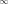

Mathematics
is an art packaged by logic
Reading notes
View all →Notes
View all →I enjoy writing notes for various kinds of math. The numbering has nothing to do with the difficulty.
{% if latest_note %} {{ latest_note.title }} {% endif %}Reading group
View all →Links

-Quotes“A different image came to me a few weeks ago. The unknown thing to be known appeared to me as some stretch of earth or hard marl, resisting penetration ... the sea advances insensibly in silence, nothing seems to happen, nothing moves, the water is so far off you hardly hear it ... yet it finally surrounds the resistant substance.”
“Every mathematician worthy of the name has experienced, if only rarely, the state of lucid exaltation in which one thought succeeds another as if miraculously, and in which the unconscious seems to play a role.”
“An absence of proof is a challenge; an absence of definition is deadly.”
“Mathematics is the art of giving the same name to different things.”
“Wir müssen wissen. Wir werden wissen.”
“Discovery is the privilege of the child: the child who has no fear of being once again wrong, of looking like an idiot, of not being serious, of not doing things like everyone else.”
“I am not really doing research, just trying to cultivate myself.”
“Ich habe das symbolische Rechnen mit Stumpf und Stil verlernt.”
“The aim of mathematics is to explain as much as possible in simple terms.”
“Mathematics is not about numbers, equations, computations, or algorithms: it is about understanding.”
“It is my experience that proofs involving matrices can be shortened by 50% if one throws the matrices out.”
“A lifetime of mathematical activity is a reward in itself.”
“Understanding what and why did not work may be more instructive than celebrating our successes.”
“You know that I write slowly. This is chiefly because I am never satisfied until I have said as much as possible in a few words, and writing briefly takes far more time than writing at length.”